Ajax dans Les formulaires
On peut ajouter du javascript sur les formulaires avec l'ecouteur d'évènement addEventListener
Associer le formulaire à un eventListener pour avoir du dynamisme dans le formulaire
On creer la function callback formModifier
- On declare le formModifier qui est la fonction callback qui permet . Avec en parameter:
- FormInterface qui permet d'aller chercher les méthodes de formulaire ('add' par exemple)
- les regions le parametere que l'on veut utiliser en l'initialisant à null
$formModifier = function(FormInterface $form, Regions $region = null){
Si on veut ajouter les départemens associés à la region on va aller les chercher en base de données.
en ternaire si les régions sont nulles alors on renvoit un tableau vide sinon on renvoit les départements associés en bdd
$departements = (null === $region) ? [] : $region-> getDepartement();
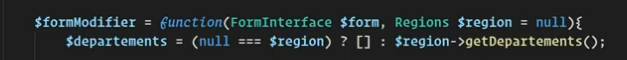
Puis on ajoute les départements au formulaire grâce à l'entityType
On cree les différentes mises en forme que l'on souhaite pour cette entite dans le formulaire
class = on choisit la class que l'on souhaite mettre en rapport
choices = le nom de la colonne qui nous interresse à récupérer
placeholder
label
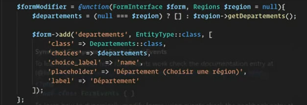
Pour information : on n'est pas obligé de séparer la fonction callback du reste du developpement, si on l'intègre directement à l'intérieur du builder cela fonctionnera. Mais de cette manière le code est plus propre
On cree la fonction add Event
- ici on associe le formulaire à un eventlistener sur le select de 'region'
$builder -> get('regions')-> addEventListener($builder -> get('regions')-> addEventListener(
FormEvents c'est l'utilisation des evenement. Ici en postSubmit pour recuperer les informations et les renvoyer en fonction de ce que l'on veut filtrer
FormEvents::POST_SUBMIT,
on déclare la fonction qui sera exécutée ave le form Event qui modifiera le formulaire. On utilise une variable qui est une fonction de callback que l'on creera par la suite
function(formEvent $event) use ($formModifier) {
On recupere la region qui est tapée par le client. En utilisant les variables du formulaire
$region = $event-> getForm()-> getData();
On appelle le formModifier avec en premier parametre le formulaire dans lequel on va allaer chercher region. Region etant dans le formulaire on va donc le chercher dans le parent. En deuxieeme paramtere on va chercher la region
$formModifier($event-> getForm()-> getParent), $region)
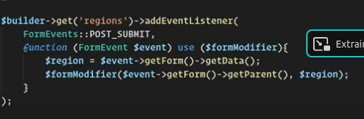
Pour que cela fonctionne il faut ajouter du javascript
Ajouter l'appel du javascript dans la page twig ou le formulaire est appele
- window.onload permet d'attendre que le dom soit chargé avant de lancer le javascript
- avec le query selector on recupere le nom du champ de formulaire
- on ajoute un event listener sur l'element pour saisir lorsque'il y aura un changeemnt
- On recuperer le formulaire complet pour faire un envoi ajax sur les action du formulaire. Closest est une fonction qui permet d'aller chercher la balise form la plus proche de son parent
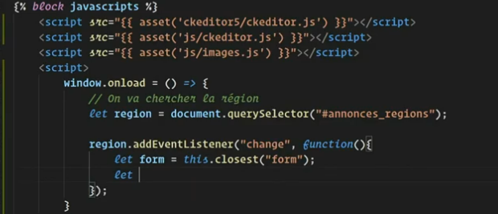
- dans le data on va ecrire les données que l'on envoi en fonction du name du select dans le formulaire + l'id de l'éléménet récupéré
- avec le fetch on envoi en ajax au formulaire et à son action
fetch(form.action,
Puis on ajoute des options au fetch
1. la methode (post ou get)
2. dans le body on envoi la data
3. on envoi le headers (content-type). Ici c'est un formulaire encodé avec le charset utf8
Cela permet de faire partir une requete en post directement pour recuperer les informations que l'on souhaite
Avec ce type de fetch on recoit directement la page (lorsque l'on verifie avec l'inspecteur (calibré sur xhr)
Puis on recupere la reponse que l'on traite en texte
Puis on fait une nouvelle promesse permettant d'avoir le html avec la nouvelle réponse
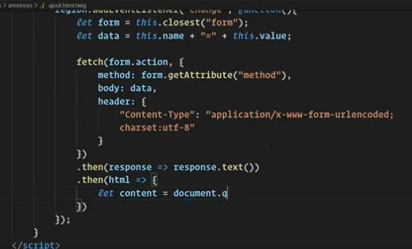
IL Y A UNE ERREUR DANS L'IMAGE : 'Headers'
On cree un element html dans lequel on insère l'html récupéré du ajout_fetch_javascript_template
Ce qui nous permet de récupérer uniquement le select que l'on souhaite. Ici en l'occurence celui des départements
Cela permet ainsi de remplacer le select par le nouveau select (récupéré dans le html ) et remplacer l'ancien select
Puis on termine par récupérer les erreurs si il y en a
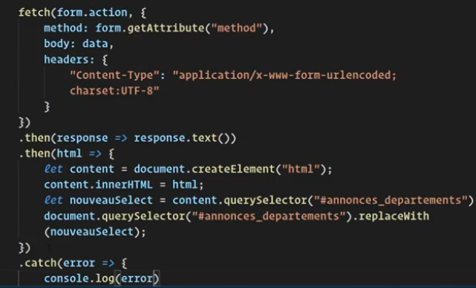
Creation du formulaire dans le formType
- 'entry_type' = on charge le sousformulaire
- 'label' = titre du formulaire
- 'entry_options' = on choisit les éléments que l'on veut récupérer du sous formulaire. En l'occurence ici on ne prend pas les labels
- 'allow_add' = permet de creer de nouvelles entrées
- 'allow_delete' = permet de supprimer des éléments
- 'by_reference' =
- si true on va chercher dans l'entité chargé (en sous formulaire) son get ou son set
- si false on va chercher dans l'entité chargé (en sous formulaire) son add. Ici on charge cette fonction pour ajouter un élémnets
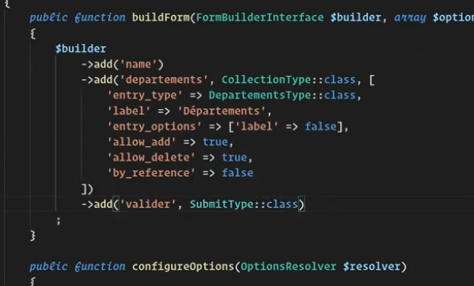
Le sous formulaire peut etre un formType de base sans particularité
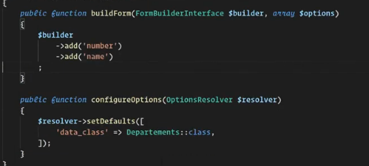
On ajoute le traitement dans le controleur pour persister les données
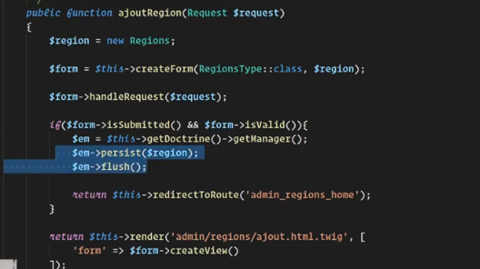
Création du formulaire Twig
Le code permettrad'afficher le contenu dans le formulaire
Découpage du formulaire avec le form_strat et form_end pour avoir le controle sur les éléments
ajout des lignes avec les form_row
Création d'une div avec les data prototype = creation d'un modele de formulaire pour les entités du sous formulaire
data-prototype="{{ form_row(form.departements.vars.prototype) }}"
Cela cree un modele html et lui ajoute un filtre twig pour recuperer les attributs html
On ajoute ainsi un exemplaire du sous formulaire
{{ form_row(form.departements) }}
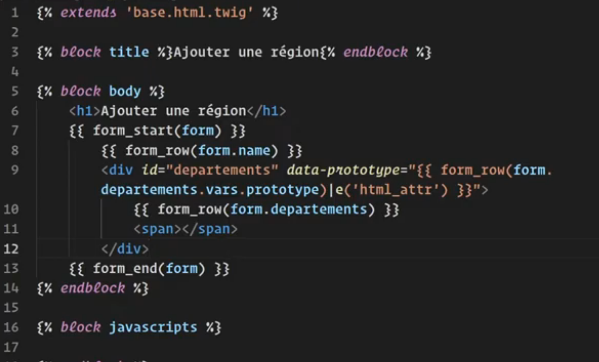
Creation du javascript pour le template pour que le formulaire s'afffiche
On declare les variable du formulaire, avec le window.onload on attend que le dom soit chargé
On recupere les balises de la collection, la collection de fomulaire c'est à dire la div complète
Puis onrécupere la span qui se trouve dans la collection
On cree le bouton d'ajout en javascript. Auquel on ajoute des propriétés : une classe et du textee
On intègre le bouton dans la span
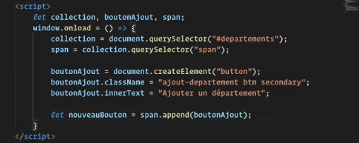
Ajout du listener sur le bouton
Avant d'ajouter des éléments, on initialise le nombre d'input qu'il y a dans le formulaire collection.
collection.dataset.index = collection.querySelectorAll("input").length
On ajoute un addEventlistener au click qui déclenche l'action du bouton : ajouter un element div et un nouveau bouton ajouter
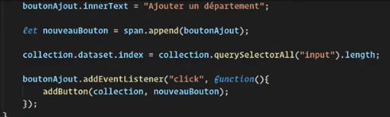
Creation de la fonction lors du click sur ajout
On n'est pas obligé de passer la collection en paramatre car c'est deja une variable globale
creation de la variable prototype dans laquelle on ecrit la div complete d'un modele du sous-formulaire
creation de la variable de l'index pour recuperer l'index de la collection
Dans le prototype on remplace tous les __name__ par l'index. le g permet d'acceder à tous les minuscules ou majuscules
On cree une nouvelle balise html dans laquelle on ajoute le prototype (nouveau formulaire) qui permet d'aller chercheer la div du form
La difference entre prototype et le newForm : prototype est un texte et newForm est un objet du DOM
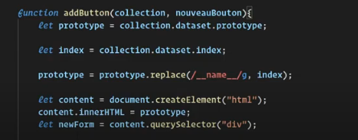
Grace au newForm on peut creer un bouton supprimer pour enlever un élément : boutonSuppr
On ajoute un type au bouton, une classe et un texte et un id (pour effectuer l'action sur le bon element)
On ajoute le bouton dans le newForm
On incrément l'index
On va chercher le bouton ajout pour pouvoir inserer le bouton ajout après le formulaire
On cree l'ecoute de l'evenement de suppression
On supprimer l'element précédent (le sous-formulaire) en supprimant le parent donc le sous-formulaire
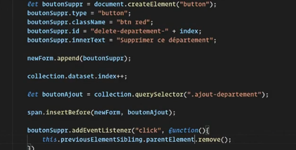
Mettre a jour les informations d'entités
Ajouter l'enregistrement en cascade lorsque l'on est sur un élément entité avec une collection Form
On va ajouter cela dans l'entité 'Produit' du sous formulaire (appellée departement dans l'exemple)
#[ORM\ManyToMany(targetEntity: Depenses::class, mappedBy: 'produit', cascade: ['persist', 'remove'])]
private Collection $depenses;
Du cote de l'entité principale on va ajouter la cascade aussi avec des propriétés particulieres
A priori les 2 doivent correspondre pour que l'information soit persistée
Concernant le joinColumn , avec cela on peut obtenir le mem resultat, cette option n'est pas à exclure
#[ORM\ManyToMany(targetEntity: Produits::class, inversedBy: 'depenses', cascade: ['persist', 'remove'])]
// #[ORM\JoinColumn(name: 'produits_id',referencedColumnName:'id')]
private Collection $produit;
Une fois ces 2 actions réalisées le formulaire doit fonctionner, etre fonctionnelle
Avec un dump des resultats du formulaire on peut voir les formulaires imbriqués les uns dans les autres.
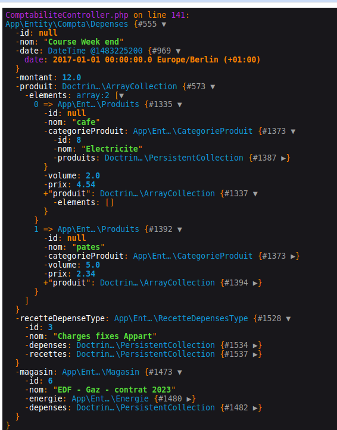